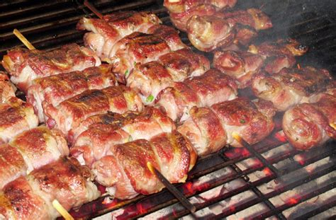
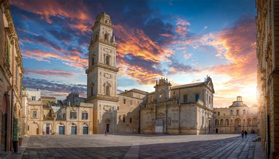
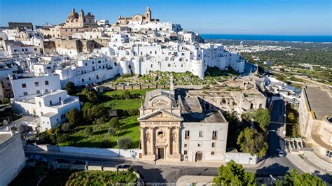
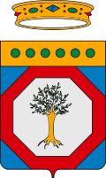

Puglia
Panoramica
La Puglia è una regione situata nel sud-est dell’Italia, conosciuta per le sue coste spettacolari, i villaggi pittoreschi e l’architettura unica come i trulli di Alberobello. È una destinazione popolare per il mare, la cucina e la cultura tradizionale.
Fatti in Breve
- Capoluogo: Bari
- Lingua: Italiano
- Popolazione: Circa 4 milioni
- Famosa per: Trulli, spiagge, olio d’oliva, cucina
- Curiosità: Ha la costa più lunga di tutte le regioni italiane!
Piatti Tipici
Orecchiette con le cime di rapa

Focaccia barese

Bombette

Panzerotti

Luoghi Famosi
Trulli di Alberobello

Castel del Monte

Lecce

Grotte di Castellana

Ostuni

Quando Visitare
La Puglia è perfetta da visitare in primavera e estate (maggio-settembre) per godersi il mare e i festival locali. L’autunno offre climi miti e meno affollamento.
Simboli Regionali
- Bandiera:
- Stemma: 